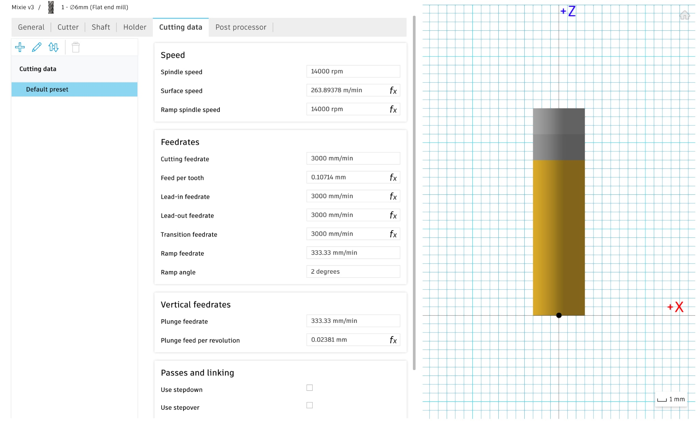
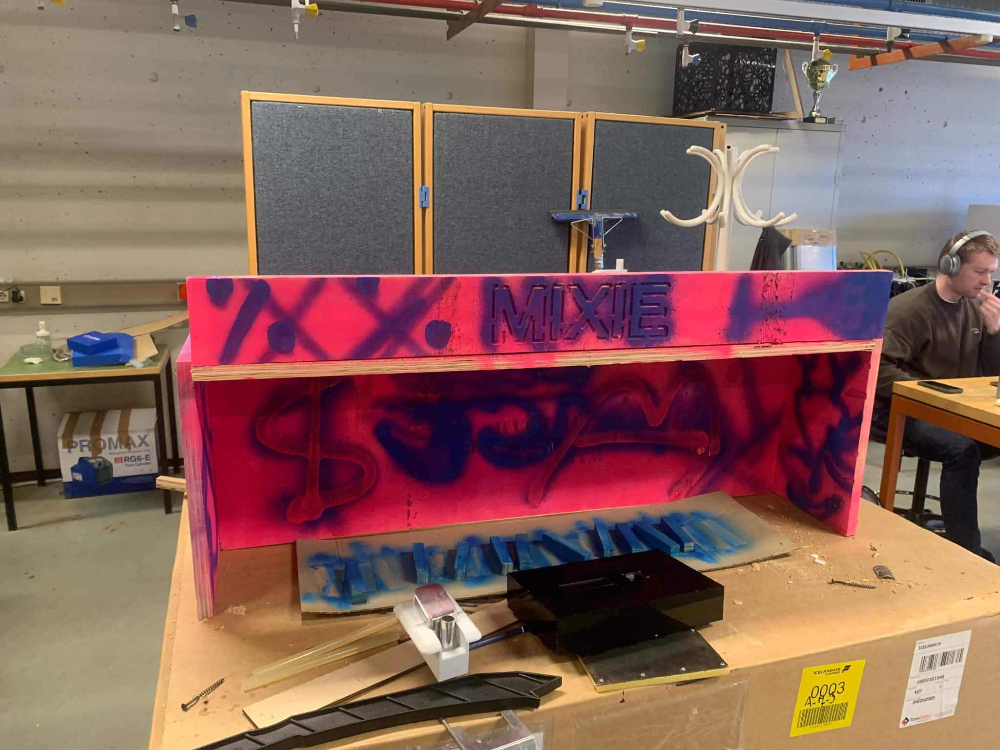

Verkefni 4 - Fræsing
Meðlimir verkefnisins eru Alexander Knudsen, Sigurður Tómas Víðisson og Þorsteinn Gunnarsson
Hugmyndaleit
Í byrjun verkefnisins komu margar hugmyndir fram hjá hópnum en að lokum var ákveðið að nýta verkefnið í lokaverkefni Sigurðs í öðrum áfanga "Tölvustýrður vélbúnaður". Í þeim áfanga átti að hanna og framleiða einhvern tölvustýrðan vélbúnað að eigin vali. Verkefnið sem Sigurður ætlaði að gera í þeim áfanga var hentugt til að samnýta í þessum. Kokteil róbot sem færir glas á milli mismunandi áfengis og blanda til að búa til einfalda kokteila kallaður "Mixie".
Hönnun og Skurður
Helstu skorður verkefnisins voru ákvarðaðar af hinu verkefninu. Við vildum geta haft átta mismunandi drykki í vélinni og sleði átti að fara á milli staða til að hella í glasið sem væri fast á sleðanum. Einnig vildum við að það væri nóg pláss fyrir klemmur sem halda rörunum lokuðum og hægt er að ýta á til að opna rörin og hleypa vökva í gegn.
Hönnunarferlið
Til að byrja með var teiknað grunnformið í Fusion 360. Vitað var að sleðinn væri 1m svo lengd var ákvörðuð til að sleðinn myndi passa sem best í vélina. Teiknuð voru göt ofan á vélina fyrir drykkina svo hægt væri að geyma brúsa ofan á vélinni. Svo var bætt smá útskurð á textanum Mixie framan á vélina því það þurfti að vera einhvers konar útskurður á plötunum.

Eftir að Mixie var teiknuð í Fusion var gert setup og valið milling. Næst var gert new setup og 2D contour fyrir útlínunar og svo valið Engrave fyrir útskurðinn. Eftir að hafa valið þetta var gert new tool með eftirfarandi stillingum á flat end mill: Number of flutes: 2, Diameter: 6mm, Spindle speed: 14.000 rpm, Cutting feed rate: 3000 mm/mín
Þetta var sett í fræsinn með aðstoð Hafliða.

Þorsteinn sá að mestu um teikninguna og Sigurður sá að mestu um toolpaths og fræsingu.
Post-Process
Eftir fræsun boruðum við allt sem bora þurfti svo hægt væri að festa saman plöturnar. Það gleymdist að gera setup fyrir drykjar holurnar svo því var bætt við eftir fræsingu. Einnig var þykktin parametrísk í hönnuninni en hún var eitthvað vitlaust stillt, þannig að henni var breytt henni þá færðist hún ójafnt. Við þetta myndaðist smá auka bil þar sem sleðinn átti að vera. Þetta var þó hægt að laga það með lengri boltum. Þegar búið var að gera allt tilbúið fyrir samsetningu tókum við plöturnar út og sprayuðum bleikar. Svo buðum við samnemendum okkar út að spraya listaverk í bláu á plöturnar til að gefa Mixie soldinn karakter
